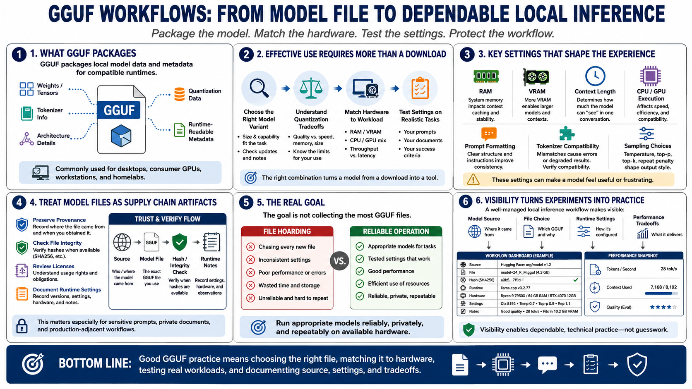

Course Summary and Key Takeaways
Connecting to LMS... Progress: in progress

Narration
GGUF packages local model data and metadata so compatible runtimes can load models efficiently. It is commonly used in local inference workflows where users want to run language models on desktops, consumer GPUs, workstations, or homelab systems. The format helps organize weights, tensors, tokenizer information, architecture details, quantization data, and other runtime-readable metadata.
Effective GGUF use requires more than downloading a file. You need to choose the right model variant, understand quantization tradeoffs, match hardware to workload, and test settings against realistic tasks. RAM, VRAM, context length, CPU and GPU execution, prompt formatting, tokenizer compatibility, and sampling choices can all affect whether a model feels useful or frustrating.
Strong practice also includes preserving provenance, checking file integrity when hashes are available, reviewing licenses, and documenting runtime settings. Model files are part of a software supply chain. They should be tracked with the same seriousness as other important dependencies, especially when they are used with sensitive prompts, private documents, or production-adjacent workflows.
The goal is not to collect the largest number of GGUF files. The goal is to run appropriate models reliably, privately, and repeatably on available hardware. A well-managed local inference workflow makes model source, file choice, runtime settings, and performance tradeoffs visible. That visibility is what turns experimentation into a dependable technical practice.